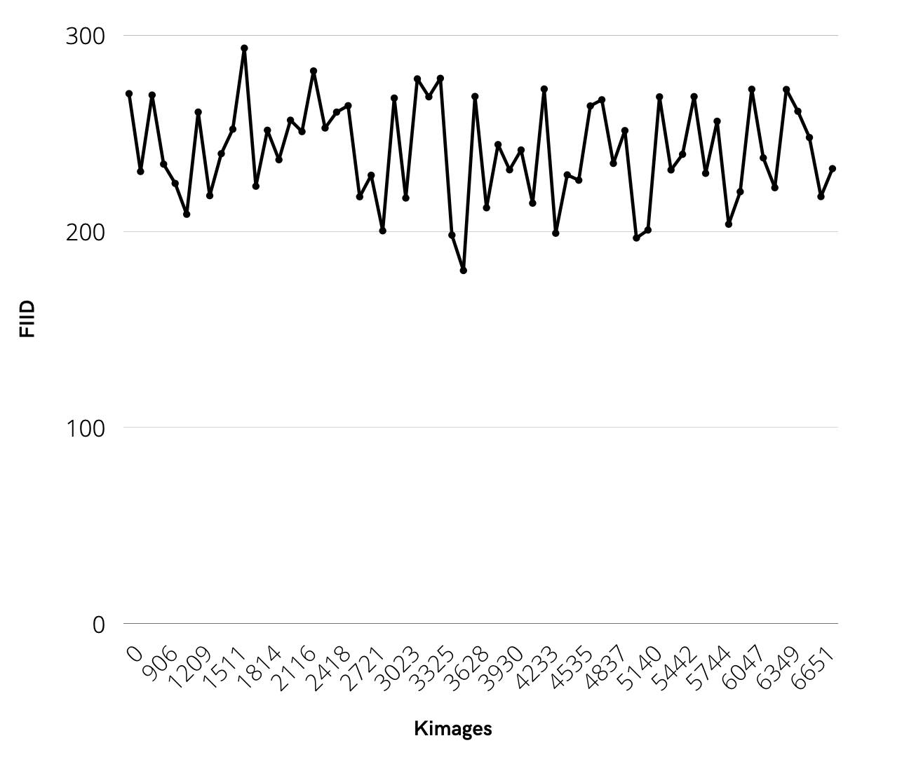
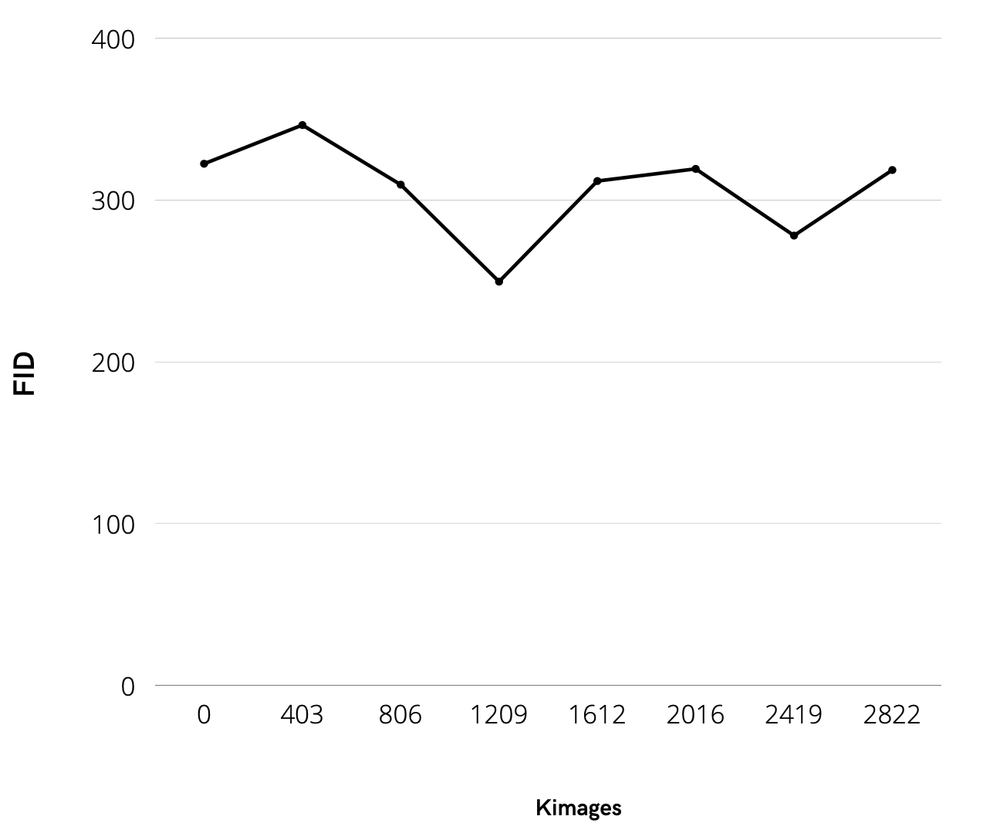

Conditional NFT Generation using GANs
- Ahmed Ashraf
- Akram Aziz
Problem Statement
Fully computer generated artwork has been an area of increasing interest in the NFT space. Various collections have been created that feature artwork exclusively generated by GANs, such as GAN Apes [13], and GAN Nature [12]. Such collections have not been met with widespread success due to the heterogeneity of the resulting artwork, as well as the lack of any discernible properties or features. These shortcomings have impaired their ability to be particularly useful as “identifiers” as discussed above. In this project, we aimed to create a system that could automate and facilitate the creation of generative art pieces that could supplement the limited set of artwork released within a said collection. The final artwork should match the art style and aesthetic, and be largely indistinguishable, from the larger collection. It should also reflect the features corresponding to a set of user-defined input “properties”.
Dataset
We have chosen to use the Bored Apes Yacht Club dataset (link: https://www.kaggle.com/stanleyjzheng/bored-apes-yacht-club), due in part to its high usability value as well as the dimensions of all the files in the dataset. sThe 1.46GB dataset contains 10,000 63x631 images that feature a homegenous art style. For preprocessing, we needed to resize all the images to 256x256 in order to comply with the StyleGAN2 architectural requirements. We also needed to reduce the number of channels from 4 to 3, by converting the images from RGBA to RGB.

Input/Output Examples
State of the art
The most recent contribution to literature that tackled the generation of NFT artwork through deep machine learning was NFTGan, which was based upon the style-transfer model StyleGAN2.
NFTGan was trained on a dataset of 2283 images that were resized to 512x512 for compatibility with StyleGAN2, using a Pytorch implementation of StyleGAN2 was then trained on the data set for 59 hours on a NVIDIA Tesla P100 GPU with 16 GB memory.
After training, the authors reported an FID of 43.64 and a KID of 0.012
Orignial Model from Literature
StyleGAN was conceived out of the need for more finely grained control over image generation applications using generative adversarial networks. To that end, changes were introduced for a redesigned architecture for the generation module in order to improve image generation quality, which no significant upgrades being proposed for either the discriminator or the loss function. Our main focus in this project is StyleGAN's replacement of the traditional input layer with a nonlinear multi-level perceptron feed forward network that maps the latent space into vector space W instead of directly feeding the vector z into the generator.
Proposed Updates
Model
Proposal 1
Our first experiment was to emulate the LoGAN model into StyleGAN 2, which involved concatenating the unprocessed labels with the noised latent space vector. The concatenated vector is then passed into a multi-layer mapping network for disentanglment
Proposal 2
Our second proposed model was to use the conditions system newly implemented into StyleGAN. This involved embedding the labels vector using a single dense layer, after which the processed labels are then concatenated with the noised latent space vector. The concatenated vector is then passed into a multi-layer mapping network for disentanglment
Proposal 3
Our third experiment was to pass the labels vector over a deep multi-layer embedding network. The processed labels are then concatenated with the noised latent space vector. The concatenated vector is then passed into a multi-layer mapping network for disentanglment.
Proposal 4
Our final experiment was to skip the embedding altogether. The unprocessed labels are concatenated directly with the latent vector after its been through the disentanglement mapping network
Dataset
Dataset Labeling
As all potential datasets were unlabelled, we proposed and created a scrapper to scrape the labels for the dataset needed
Results
Experiment 1

Experiment 2

Technical report
- Programming framework: Python 3.7 venv supported by anaconda
- Training hardware: Tesla P100 w/16GB of VRAM - Provided by Google Colab Pro+
- Training time: An aggregate of 144 hours
- Number of training cycles: 6,650 kimg (Chief Experiment)
- Time per cycle: 120 seconds/kimg (on average)
Conclusion
Our conclusions are two folds. We firmly believe that our results act as a good counterargument against qualitative metrics, including FID, for the evaluation of Generative Adverserial Networks. Our FID results for both experiments indicated no improve in the performance of the generator from inception till hour 96 of training. Regardless, our produced images showed close proximity to the optimal anticipated results. We also believe that our results demonstrated that the LoGAN proposal for conditional generation is superior vis-a-vis to the latest StyleGAN proposal.
References
- https://github.com/NVlabs/stylegan
- https://github.com/NVlabs/stylegan2-ada
- https://github.com/cedricoeldorf/ConditionalStyleGAN
- https://arxiv.org/pdf/2112.10577.pdf
- https://arxiv.org/pdf/1812.04948.pdf
- https://arxiv.org/pdf/2006.06676.pdf
- https://arxiv.org/pdf/1909.09974.pdf
- https://www.kaggle.com/vepnar/nft-art-dataset
- https://www.kaggle.com/stanleyjzheng/bored-apes-yacht-club
- https://www.kaggle.com/tunguz/cryptopunks
- https://www.kaggle.com/solpunks/solpunks-truth-project
- https://opensea.io/collection/gan-nature
- https://opensea.io/collection/gan-apes-nft
- https://docs.opensea.io/reference/api-overview
- https://boredapeyachtclub.com/#/provenance
- https://machinelearningmastery.com/how-to-implement-the-frechet-inception-distance-fid-from-scratch/
- https://www.forbes.com/sites/forbestechcouncil/2021/12/27/the-nft-metaverse-building-a-blockchain-world/
- https://arxiv.org/pdf/1912.04958.pdf